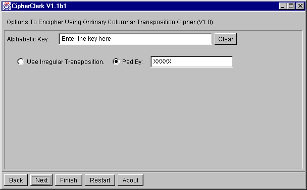

Ordinary Columnar Transposition
Description
All letters of the key word are written. Numbers are assigned to these
letters according to there position in the alphabet and the key word. All
letters of the alphabet are written line by line below these numbers. For
example, the key word TEST and the plain text A MESSAGE
FOR YOU yields:
| T |
E |
S |
T |
| 3 |
1 |
2 |
4 |
| A |
M |
E |
S |
| S |
A |
G |
E |
| F |
O |
R |
Y |
| O |
U |
X |
X |
The result is read column by column in the order of the numbers in the
second row: MAOU EGRX ASFO SEYX. This text is then reformatted.
If the usual grouping id desired, the result is MAOUE GRXAS FOSEY X.
If the word spacing should be conserved, we obtain M AOUEGRX ASF OSE
YX.
In this case the table was filled completely by adding two X's.
In such case the transposition is called regular. In the other case
- leaving some fields blank - the transposition is called irregular:

To proceed, you may